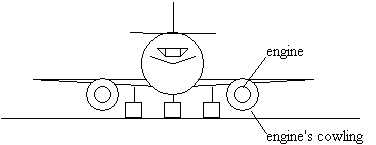
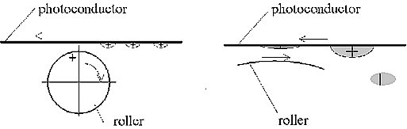
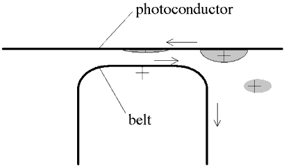

Zinovy Royzen, President
TRIZ Consulting, Inc.
Seattle, Washington
Zroyzen@aolcom
http://members.aol.com:/zroyzen/triz.html
Zinovy Royzen is a leading TRIZ expert with thirteen years of experience in development of TRIZ and TRIZ application in new generation product development, quality improvement, cost reduction, and problem solving. He has taught TRIZ to about a thousand engineers and scientists. He has led workshops and/or provided consultation at The American Supplier Institute, The Boeing Company, Eastman Kodak Company, The Hewlett-Packard Company, Illinois Tool Works, Kimberly-Clark Corporation, Lexmark International Inc., Weyerhaeuser Company and Xerox Corporation among others. He received his Master's degree in Mechanical Engineering from Engineering University of Kaliningrad, Russia, in 1975. He holds 26 patents.
ABSTRACT
This paper describes TRIZ approaches to solve fundamental contradictions or conflicts. TRIZ is the Russian acronym that means The Theory of Inventive Problem Solving. Fundamental contradictions are the most difficult type of problems in the development of next generation products. TRIZ offers logical knowledge-based technology for solving such conflicts. New breakthrough concepts that eliminate contradictions can be found routinely by applying TRIZ technology. Fast breakthrough solving of the fundamental problems of a new project is the key for its success.
1. INtrODUCTION
In recent years accelerated product development has become increasingly important. The marketing life for a product is considerably shorter than ten years ago. It is no longer acceptable to take years to develop a new generation of a product. The rate of progress in performance of technological systems has become the key issue in the competition of a modern economy.
In most cases, my customers knew how to make performance of their products five or even ten percent better. However, they did not know how to increase the level of performance significantly. The lack in the search for breakthrough concepts was cased by ineffectiveness of conventional approaches to define and solve conflicts. A desired improvement of a product's parameter caused unacceptable deterioration of another parameter of the product. Therefore, a trade-off was often suggested, instead of a solution satisfying both of the conflicting parameters.
The Laws of Engineering System Evolution have became a centerpiece in TRIZ thinking about the strategy of development of new generation products and processes. According to these Laws, the rate of improvement of a technological system decreases as improvement of its basic parameters develops a conflict. The only way for a breakthrough is to solve or eliminate the conflict that has almost stopped the evolution of a technological system.
Dr. Genrich S. Altshuller, the creator of TRIZ, analyzed ways of solving and eliminating the contradictions in the world's most significant inventions. He identified inventive principles for solving or eliminating contradictions. Then he developed a logical knowledge-based method to solve such contradictions. TRIZ conflict-solving methods include Inventive Principles, the Algorithm for Inventive Problem Solving and TRIZ Standard Techniques.
2. THE TABLE FOR ENGINEERING CONtrADICTION ELIMINATION
A situation in problem solving where improving one parameter of a system causes deterioration of another parameter is called an engineering contradiction. At first, Altshuller suggested eliminating engineering contradictions by applying the Inventive Principle. Continued analysis of the most innovative inventions led to an increase in the number of Inventive Principles, which were included in a set of 40 Inventive Principles:
| 1. Division 2. Extraction 3. Local Quality 4. Asymmetry 5. Combining 6. Universality 7. Nesting 8. Counterweight 9. Preliminary Counteraction 10. Preliminary Action |
11. Compensation 12. Equipotentiality 13. Reverse 14. Sphericity 15. Degree of Dynamism 16. Excess or Shortage 17. Change Dimension 18. Oscillation 19. Periodic Actions 20. Steady Useful Action |
21. Rushing Through 22. Turn a Minus into a Plus 23. Feedback 24. Inserting 25. Self Service 26. Copying 27. Cheap Short Life 28. Redesigning 29. Fluid System 30. Flexible Membranes |
31. Porous Materials 32. Changing Color 33. Homogeneity 34. Rejection and Regeneration 35. Changing Properties 36. Use of Phase Changes 37. Thermal Expansion 38. Oxidant 39. Inert Environment 40. Composite Materials |
To ease the search for the most applicable principle, the Table for Engineering Contradiction Elimination was developed. Altshuller identified the most common 39 parameters involved in engineering contradictions. They are:
| 1. Weight of movable object 2. Weight of fixed object 3. Length of movable object 4. Length of fixed object 5. Area of movable object 6. Area of fixed object 7. Volume of movable object 8. Volume of fixed object |
9. Speed 10. Force 11. Stress, pressure 12. Shape 13. Object's composition stability 14. Strength 15. Duration of moving object's operation 16. Duration of fixed object's operation 17. Temperature 18. Illumination 19. Energy expense of movable object |
20. Energy expense of fixed object 21. Power 22. Waste of energy 23. Loss of substance 24. Loss of information 25. Waste of time 26. Quantity of substance 27. Reliability 28. Measurement accuracy 29. Manufacturing precision |
30. Harmful action at object 31. Harmful effect caused by the object 32. Ease of manufacture 33. Ease of operation 34. Ease of repair 35. Adaptation 36. Device complexity 37. Measurement 38. Degree of automation 39. Productivity |
The Table for Engineering Contradiction Elimination is a matrix having these 39 parameters in two axes. You have to select parameters to improve on the vertical axis and the parameters that are deteriorated by the improvement on the horizontal axis. The intersections of the selected parameters contain reference to recommended Inventive Principles.
Here is an example of a contradiction. When The Boeing Company was developing a modification of its 737, it was necessary to replace existing engines with more powerful ones. The more powerful an engine, the more air it needs, and therefore the diameter of the cowling has to be larger. The distance between the cowling of a more powerful engine and the ground would be too close. Herein lies the conflict.

Fig. 1. The cowlings are to close to the ground
The Table for Engineering Contradiction Elimination described earlier, recommends several Inventive Principles to solve the conflict, including Asymmetry (No. 4), which suggests:
A. Change form of the object or its parts from symmetrical to asymmetrical.
B. Increase the degree of asymmetry.
At The Boeing Company, a person who was a member of the team working on the problem told me that if the team had known the Inventive Principles, they would have solved the problem faster. They had suggested increasing the diameter of the cowling and flattening its bottom to make it higher off the ground.
The Table for Engineering Contradiction Elimination is one of the first TRIZ methods. It is easy to learn how to use the Table, but as any technological system, it has limits. Accuracy in matching the real parameters that should be improved or get deteriorated with parameters in the Table is critical in the search for the recommended principles. Sometimes the list of 39 parameters does not include a parameter that should be improved or gets deteriorated, for example it does not include the resistance of an electrical circuit.
Another limit of the table is lies in matching engineering contradictions. As soon as it is known that engineering contradictions are caused by physical contradictions, it becomes clear that matching physical contradictions is more effective than matching engineering contradictions. A physical contradiction is the opposite requirements to the same parameter of the system. It is possible describe precisely the physical contradiction to any conflict and eliminate it. To overcome the Table's limits, more effective methods have been developed.
3. THE ALGORITHM FOR INVENTIVE PROBLEM SOLVING
The Algorithm for Inventive Problem Solving (ARIZ) is the main TRIZ method to solve conflicts. It is a method that consists of a set of clear rules based on understanding the evolution of products and processes, ways to overcome psychological inertia, and the database of physical contradiction elimination.
The logic of ARIZ guides you to an understanding of the ideal solution to the problem, which means that the system has to improve itself at no cost and without any undesired effect. The logic of ARIZ is based on the understanding that any conflict or engineering contradiction is caused by a physical contradiction where the same parameter has to meet opposite requirements. ARIZ directs you to define the physical contradiction that prevents approaching the ideal solution to the problem. ARIZ provides you with a database of physical contradiction separation learned from 1.5 million of the most innovative inventions.
ARIZ's basic steps include:
* Analysis of the system, which helps to define the basic function of the system and the root conflict that is worth solving.
Building the model of the problem including analysis of the two opposite versions of the selected conflict, selection the version which is the best for the basic function of the system and building the model of the problem to eliminate the disadvantage in the selected conflict.
* Analysis of the resources of the system includes analysis of the zone where the selected conflict happens, periods when it happens and objects and energy that system has. The purpose of this analysis is to prepare for the separation of the physical contradiction and utilization of the resources of the system.
* Definition of the physical contradiction includes the definition of the opposite conflicting requirements to the same parameter, which causes the conflict or the engineering contradiction.
* Definition of the ideal solution directs one to extreme utilization of the resources. This step extremely narrows the problem domain.
* Separation of the physical contradiction includes application of one of six rules to separate conflicting requirements.
* Utilization of the resources directs you to minimize the change in the system and its cost.
* Evaluation and development of the created concepts.
Lets analyze a situation. A unit of a color laser printer includes a moving photoconductor carrying droplets of positively charged liquid toner. A positively charged roller rotates in the reverse direction and removes the excess of the positively charged toner by electrostatic forces. The forces are in reverse proportion of the square of the distance between the roller and the droplets. Therefore, the larger the diameter of the roller, the better it performs its function, but the larger size of the unit. The roller has a diameter of 20-30 mm which is a trade-off in the selection of its diameter.

Fig. 2. Roller
Applying ARIZ to the situation leads to the physical contradiction that has caused the conflict between the roller's performance and its size. The basic function of the roller is to remove excess of droplets. Replacement of terms by simple words helps to overcome psychological inertia. Rename the roller to "remover." The physical contradiction is that the remover has to be larger (or even flat) to increase the electrostatic force of the interaction, and has to be smaller (or bent) to minimize the size of the unit. The ideal solution is that the remover provides itself with a flat surface and a bent surface. The two conflicting requirements can be separated between zones. If the remover has to have a movable surface, it can be a belt. A belt improves the performance of the remover and reduces its length.

Fig. 3. Belt
In traditional engineering thinking, if there is a conflict, it is common to accept a trade-off. TRIZ thinking leads to analysis of the conflict and to solution satisfying both conflicting requirements. ARIZ accelerates the search for breakthrough concepts dramatically.
Elimination of the conflict that almost stopped the evolution of a technological system provides the possibility for a significant improvement in the system's performance until the system reaches a new conflict. With TRIZ the next conflict can be predicted and solved much earlier.
4. TRIZ STANDARD TECHNIQUES
TRIZ Standard Techniques are the most effective transformations of a product or process toward breakthrough improvements. To apply these transformations for conflict elimination successfully, it is necessary, at first, to identify a harmful or unwanted action to be eliminated.
TRIZ Standard Techniques to eliminate conflicts include:
* Six techniques for direct elimination of a harmful or unwanted action
* Seven techniques for indirect elimination of a harmful or unwanted action
* Three techniques for elimination of the consequences of a harmful action
Three techniques to convert a harmful action into a useful action
These Techniques were designed to simplify the search for breakthrough concepts by avoiding following steps of ARIZ, while creating the same concepts. These Techniques suggest ways for elimination of physical contradictions even without their definition.
5. CONCLUSION
TRIZ is a logical knowledge-based technology for conceptual design in conflict solving. TRIZ thinking helps overcome psychological inertia and preconceived notions. TRIZ directs you to select the root conflict. TRIZ helps to maximize utilization of the resources of a system to make it eliminate the root conflict at no cost and without any unwanted effects. Engineers, researchers and managers involved in product development can rely on TRIZ to avoid a failure and trade-off in solving conflicts in development of new generation products. TRIZ thinking accelerates the search for breakthrough solutions and gives users the ability to reach far greater level of product performance. TRIZ users have demonstrated a strategic advantage in new product development.
REFERENCES
1. Altshuller, G. S., 1984, Creativity as an Exact Science. New York: Gordon and Breach.
1. Altshuller, G. S., 1986, in Russian, To Catch an Idea. Introduction in the Theory of Inventive Problem Solving, Novosibirsk: Nauka.
2. Altshuller, G. S., Zlotin, B. L., Zusman, A. V., and Philatov, V. I., 1989, in Russian, Searching for New Ideas: From Insight to Technology. The Theory and Practice of Inventive Problem Solving, Kishinev: Kartya Moldovenyaska.
3. Royzen, Z. 1993, "Application TRIZ in Value Management and Quality Improvement." The SAVE Proceedings, Vol. XXVIII, Society of American Value Engineers, International Conference, May 2-5, 1993, Fort Lauderdale, Florida,
Pp. 94-101.
4. Royzen, Z. 1995, "Product Improvement and Development of New Generation Products Using TRIZ." The ASI Symposium, Total Product Development, November 1-3, 1995, Dearborn, Michigan, pp. 251-257.
5. Royzen, Z. 1996, "TRIZ Technology of Conceptual Design. Inventive Problem Solving Five-day Workshop", Seattle: TRIZ Consulting, Inc.This paper was presented at the ASI Second Total Product Development Symposium, November 6-8, Pomona, CaliforniaCopyright 1996 by American Supplier Institute, Inc.Allen Park, Michigan, 48101